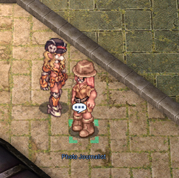
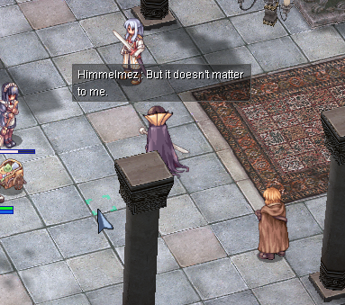
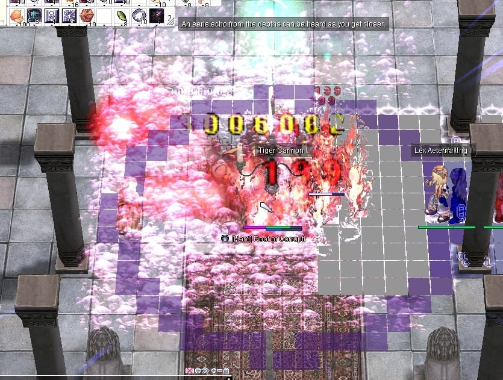
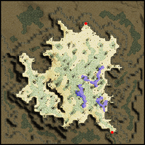
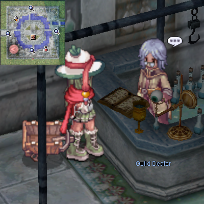
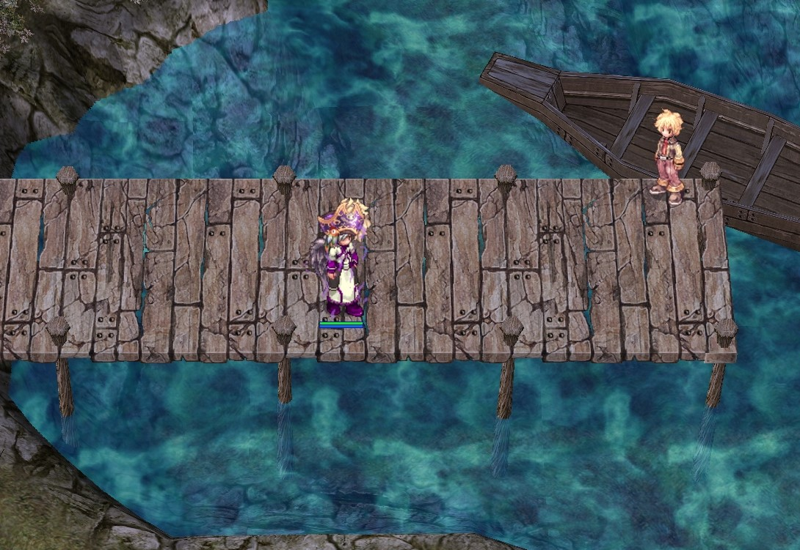
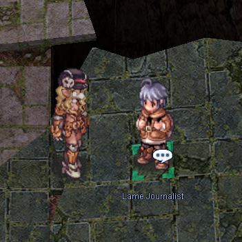

File list
Jump to navigation
Jump to search
This special page shows all uploaded files.
{kind=link}
{kind=link}
| Date | Name | Thumbnail | Size | User | Description | Versions |
|---|---|---|---|---|---|---|
| 05:04, 9 November 2019 | HighRankAgent.png (file) |  |
316 KB | Hatsumei | 1 | |
| 03:07, 18 September 2015 | Selfie.png (file) |  |
311 KB | AloeLeaflet | 1 | |
| 13:24, 16 October 2016 | Mado Dealer.png (file) |  |
311 KB | AloeLeaflet | 2 | |
| 20:33, 7 September 2016 | ChiefVD.png (file) | 310 KB | Mayo | 1 | ||
| 16:35, 7 September 2016 | SunnyVD.png (file) |  | 308 KB | Mayo | 1 | |
| 20:51, 3 February 2016 | OGH2.png (file) |  |
306 KB | Aristiel | 2 | |
| 11:30, 11 December 2019 | Wikieditexample.jpg (file) |  |
306 KB | IllegalKross | 1 | |
| 06:29, 13 September 2019 | Sain b.png (file) |  |
304 KB | Hatsumei | 1 | |
| 19:32, 7 September 2016 | DeliverVD.png (file) | 303 KB | Mayo | 1 | ||
| 14:31, 26 April 2018 | Rkphoto.png (file) | 303 KB | Nithraniel | 1 | ||
| 19:35, 1 November 2016 | Character ShadowChaser.jpg (file) | 303 KB | VTours | 1 | ||
| 15:59, 6 October 2019 | SpookySelimbig.png (file) |  |
302 KB | Panic | 1 | |
| 20:00, 12 September 2016 | 17LIG.png (file) |  |
301 KB | Halves | 1 | |
| 23:30, 8 October 2018 | TraderGeffenshop.png (file) | 299 KB | AloeLeaflet | 1 | ||
| 06:28, 13 September 2019 | Astrid b.png (file) | 298 KB | Hatsumei | 1 | ||
| 02:23, 18 September 2015 | Emptybottledealer.png (file) | 297 KB | AloeLeaflet | 1 | ||
| 06:29, 13 September 2019 | Delphina b.png (file) |  |
297 KB | Hatsumei | 1 | |
| 20:24, 3 February 2016 | OGH 6.png (file) |  | 297 KB | Aristiel | 1 | |
| 20:35, 21 November 2019 | Character Ranger.jpg (file) | 295 KB | BlackIntels | Ranger Official Artwork | 1 | |
| 08:57, 13 May 2019 | SNsupport2.png (file) | 294 KB | G5457s | Skill set for SN Support Build, tankier version | 1 | |
| 03:00, 18 February 2016 | Rune Knight.png (file) |  |
293 KB | Shalltear | 1 | |
| 23:33, 29 November 2020 | King of Emperium.jpg (file) | 293 KB | BlackIntels | 1 | ||
| 21:32, 27 March 2019 | Limesbig.png (file) |  |
293 KB | Panic | 1 | |
| 13:56, 23 November 2018 | Petite1.png (file) | 293 KB | AloeLeaflet | 1 | ||
| 12:40, 6 February 2016 | Intro1.jpg (file) | 292 KB | Halves | 1 | ||
| 16:54, 2 October 2016 | Guillotinecross.jpg (file) |  |
291 KB | Windrell | 1 | |
| 13:53, 23 November 2018 | Drosera2.png (file) | 290 KB | AloeLeaflet | 1 | ||
| 17:14, 3 September 2018 | ScreenNovaRO131.jpg (file) |  | 288 KB | Leriaskho | 1 | |
| 03:15, 30 May 2020 | ABfem.jpeg (file) | 288 KB | Airin | Archbishop image for Airin's Guide. Source: https://www.pixiv.net/en/artworks/65302805 | 1 | |
| 23:42, 6 October 2018 | Alche4.png (file) | 287 KB | AloeLeaflet | 1 | ||
| 03:45, 8 May 2019 | Seruel.png (file) | 287 KB | Panic | 1 | ||
| 13:54, 23 November 2018 | Grandpeco3.png (file) | 287 KB | AloeLeaflet | 1 | ||
| 13:56, 23 November 2018 | Orcwarrior3.png (file) | 287 KB | AloeLeaflet | 1 | ||
| 13:53, 23 November 2018 | Drosera1.png (file) | 286 KB | AloeLeaflet | 1 | ||
| 17:58, 7 September 2016 | AlVD.png (file) |  |
285 KB | Mayo | 1 | |
| 06:30, 13 September 2019 | Will b.png (file) |  |
285 KB | Hatsumei | 1 | |
| 13:53, 23 November 2018 | Desertwolf2.png (file) |  | 284 KB | AloeLeaflet | 1 | |
| 13:56, 23 November 2018 | Petite2.png (file) | 282 KB | AloeLeaflet | 1 | ||
| 23:42, 6 October 2018 | Alche2.png (file) |  | 281 KB | AloeLeaflet | 1 | |
| 22:15, 23 November 2018 | Seal1.png (file) |  |
279 KB | AloeLeaflet | 1 | |
| 09:16, 3 September 2019 | Clan System.png (file) | 279 KB | Hatsumei | 2 | ||
| 22:16, 23 November 2018 | Seal2.png (file) | 278 KB | AloeLeaflet | 1 | ||
| 19:30, 16 July 2018 | SE.png (file) |  |
278 KB | Colours | 1 | |
| 20:02, 16 September 2018 | AloeEvo 12.png (file) | 278 KB | AloeLeaflet | 1 | ||
| 03:05, 14 February 2020 | NamelessDocks.jpg (file) |  | 277 KB | Skorian | 1 | |
| 11:45, 9 April 2018 | Madomeme3LOOPPLS.gif (file) |  |
277 KB | RadenWA | 1 | |
| 11:44, 9 April 2018 | Madomeme3.gif (file) |  |
277 KB | RadenWA | 3 | |
| 16:58, 8 November 2018 | Shadowchaser.png (file) |  |
276 KB | Cinderfire | 1 | |
| 16:35, 7 September 2016 | TrappVD.png (file) |  | 274 KB | Mayo | 1 | |
| 06:29, 13 September 2019 | Seruel b.png (file) |  |
272 KB | Hatsumei | 1 |
{kind=link}
{kind=link}
{kind=link}
{kind=link}
{kind=link}
{kind=link}
{kind=link}
{kind=link}
{kind=link}
{kind=link}
{kind=link}
{kind=link}
{kind=link}
{kind=link}
{kind=link}
{kind=link}
{kind=link}
{kind=link}
{kind=link}
{kind=link}
{kind=link}
{kind=link}